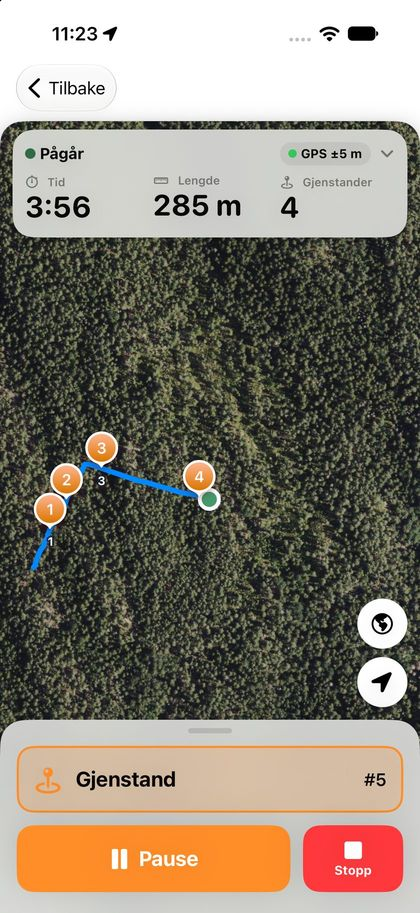
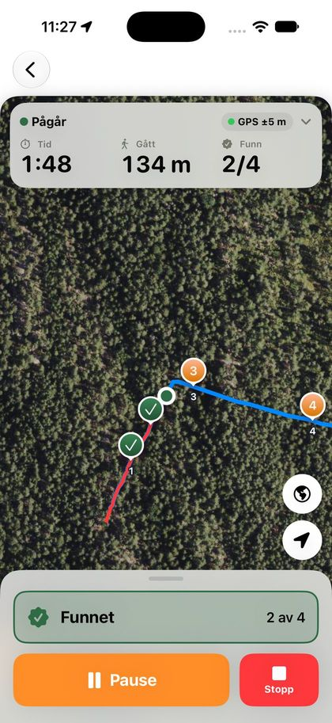
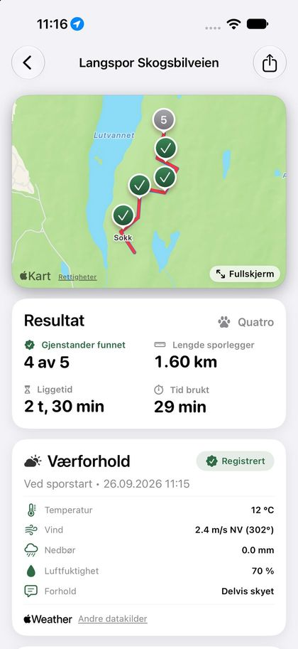

iOS-app for sportrening
Følg sporet. Se fremgangen.
Trax hjelper deg å legge spor, trene hunden og følge utviklingen over tid.



Support
Trenger du hjelp?
Send oss en e-post, så svarer vi så raskt vi kan, vanligvis innen to virkedager. Beskriv gjerne hva du prøvde å gjøre, hvilken iPhone og iOS-versjon du har, og legg ved skjermbilde om mulig.
Vanlige spørsmål
Sporet blir unøyaktig. Sjekk at Trax har tilgang til posisjon «Ved bruk av appen» og at Nøyaktig posisjon er slått på under Innstillinger › Trax › Posisjon. GPS er mindre presis i tett skog og mellom høye bygninger.
Hvordan sletter jeg dataene mine? Alt lagres bare på telefonen din. Du kan slette enkeltøkter i appen, eller slette appen for å fjerne alle data permanent.
Kan jeg flytte data til en ny telefon? Dataene følger med når du gjenoppretter telefonen fra en iCloud- eller datamaskin-sikkerhetskopi. Du kan også eksportere økter fra appen.
Personvernerklæring
Slik behandler Trax dine data
Sist oppdatert: 4. oktober 2026
Denne erklæringen forklarer hvilke opplysninger Trax samler inn, hvorfor, og hvilke rettigheter du har. Trax er utviklet av Silje Tillerflaten, som du når på stillerflaten@icloud.com.
Kort fortalt
Alt du registrerer i Trax lagres bare på din egen telefon. Trax har ingen konto, ingen egen server og ingen reklame, og utvikleren har ikke tilgang til dataene dine.
Hva appen lagrer på telefonen
- Posisjon
- GPS-punkter mens du registrerer et spor eller en treningsøkt. Posisjon hentes bare når appen er i bruk og du har startet en økt.
- Treningsdata
- Spor, ruter, tidspunkt, liggetid, vær, notater og opplysninger om hunden din som du selv legger inn.
Når data forlater telefonen
- Værdata
- For å hente været for en økt sender appen posisjonen og tidspunktet sporet startet til Apple Weather (WeatherKit). Apple bruker posisjonen bare til å svare på forespørselen og knytter den ikke til deg eller Apple-kontoen din. Det sendes ingen navn eller treningsdata. Værdataene som kommer tilbake, lagres sammen med økten på telefonen. Eldre økter kan ha værdata fra Open-Meteo (open-meteo.com, CC BY 4.0).
- Eksport
- Når du velger å eksportere eller dele en økt, sendes den dit du selv velger, for eksempel på e-post, melding eller til en annen app. Det skjer bare når du trykker på eksport.
- Sikkerhetskopi
- Hvis du har iCloud-sikkerhetskopi slått på, kan iOS ta med Trax-dataene i sikkerhetskopien din. Den styres av Apple og din Apple-konto, ikke av Trax.
- Krasjrapporter
- Anonyme krasjrapporter fra Apple, bare hvis du har slått på deling av analysedata på iPhonen.
Trax selger ikke data, bruker dem ikke til reklame og sporer deg ikke på tvers av andre apper og nettsteder.
Denne nettsiden
Nettsiden ligger på GitHub Pages. GitHub lagrer IP-adressen til besøkende i tekniske logger av sikkerhetshensyn, se GitHubs personvernerklæring. Nettsiden bruker ikke informasjonskapsler (cookies) eller analyseverktøy, og henter ikke skrifttyper eller annet innhold fra andre tjenester.
Hvor lenge dataene lagres
Dataene ligger på telefonen til du sletter dem. Du kan slette enkeltøkter i appen, og alt fjernes permanent når du sletter appen.
Dine rettigheter
Siden dataene bare ligger hos deg, har du full kontroll over dem selv. Du kan når som helst slå av tilgang til posisjon under Innstillinger › Trax på iPhonen. Har du spørsmål om personvern, kontakt stillerflaten@icloud.com. Du kan også klage til Datatilsynet (datatilsynet.no).
Barn
Trax er ikke rettet mot barn under 13 år, og vi samler ikke bevisst inn opplysninger om dem.
Endringer
Vi oppdaterer denne erklæringen ved behov. Datoen øverst viser når den sist ble endret.